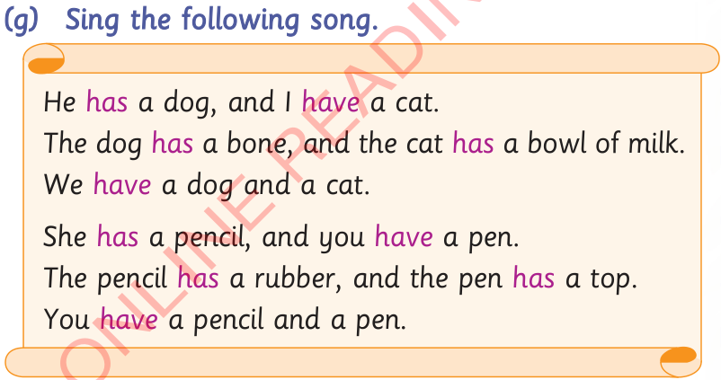

(g) Sing the following song.
He has a dog, and I have a cat.
The dog has a bone, and the cat has a bowl of milk.
We have a dog and a cat.
She has a pencil, and you have a pen.
The pencil has a rubber, and the pen has a top.
You have a pencil and a pen.

Activity 2: Reading practice
(a) Read the following passage.
Poultry farm
My name is Bora. I live with my parents in Upendo village. My parents have a poultry farm. They have many hens on the farm. I have four hens